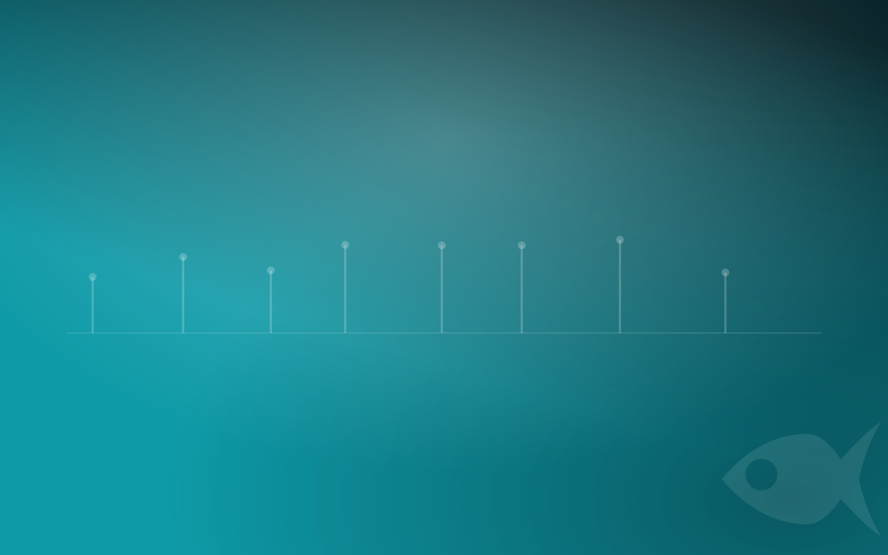

Spotting C2 beaconing in a packet capture
A compromised host checking in with its command-and-control server doesn't look dramatic in a capture. It looks like a small, boring request that repeats. The skill is learning to notice the rhythm.
Open a busy PCAP and the C2 traffic is not the loud thing. It's a handful of packets to one host, over and over, buried under the browsing, updates and DNS lookups of a normal workday. Students who are used to looking for the big transfer walk right past it. Teaching network forensics well means teaching them to look at timing, not just volume.
Beaconing is a pattern in time
Malware that beacons phones home on a schedule — every 60 seconds, every 5 minutes — to ask for instructions. In a capture, that shows up as connections to the same destination at suspiciously regular intervals. The giveaways a student learns to find:
- Regular intervals. Human traffic is bursty and irregular; a beacon ticks like a metronome. Build a conversation list, sort by destination, and the repeat-offender endpoint stands out.
- Jitter. Smarter implants randomize the interval by a percentage to blend in, so the gaps aren't identical — but they still cluster around a mean. Learning to see a jittered beacon, not just a perfectly periodic one, is the real lesson.
- Small, consistent payloads. The check-in request and its "nothing to do" reply tend to be a similar, small size each time — until the one beacon that carries a tasking or stages data and suddenly isn't small.
- A destination that doesn't belong. A host no other machine on the network talks to, a raw IP with no DNS, or a domain that resolves oddly.
The loudest packet in a capture is rarely the important one. C2 hides in the rhythm, and rhythm is something you have to be taught to see.
Follow the stream
Once a student has a candidate beacon, the next move is to reassemble it. In Wireshark, following the TCP or HTTP stream turns a scatter of packets into the actual conversation — the request headers, the user-agent the implant forges, the URI it calls, and whatever comes back. That's where a student confirms it's really C2 and not a noisy but benign service, and where the indicators worth escalating come from. The same reassembly skill pulls cleartext credentials out of an unencrypted login and reconstructs a file out of an HTTP transfer.
Tell it apart from the background
The hard part of a realistic capture is the noise. Red Herrings network cases don't hand a student a clean two-host PCAP with nothing but the beacon in it. They include benign background traffic — ordinary web browsing, DNS, software that legitimately polls on a timer — so the student has to rule things out, not just spot the one obvious flow. Real captures carry DNS, HTTP transfers, cleartext credentials and bulk exfil alongside the C2, and the work is separating signal from the rest.
A different capture for every student
Each student gets their own seeded PCAP: their own internal and C2 addresses, their own beacon interval and jitter, their own timestamps and payload sizes. The destination IP one student reports as the C2 server won't match anyone else's, so a copied answer is the wrong answer — and every generated capture is independently re-solved and verified by the Fresh Catch check before release, so the answer key is provably correct against that student's packets. Guided mode can walk a learner from "look at the conversation list" to "sort by destination and watch the timing" to the answer, one question at a time.
Where it fits in the pathway
These captures anchor the network-forensics track, aligned to the published objectives of the GNFA, and they show up in the incident-response cases too, where beaconing is one technique among many in a larger chain. Students build the one habit that makes a network analyst — reading traffic by its behavior over time — and you grade the whole class at once.
Start the free 14-day trial. It runs on your machine, and you can generate a per-student PCAP with its own beacon in minutes.